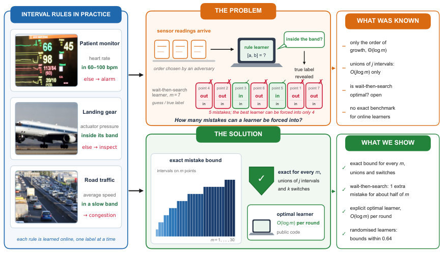
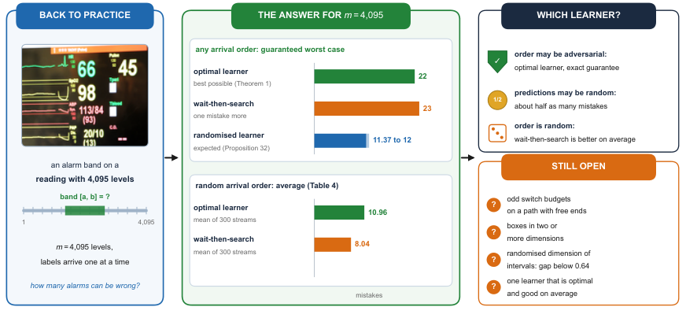

Exact Littlestone-dimension formulas for intervals and switch-budget classes are machine-checked in Lean 4 with Mathlib across 20 files in a public repository.
Abstract
The Littlestone dimension of a hypothesis class equals the smallest number of mistakes an online learner can guarantee against an adaptive adversary. For discrete intervals and unions of $j$ intervals on $m$ points, only its order of growth was known. We determine it exactly. For every switch budget $k$ (with both end labels fixed when $k$ is odd), the smallest size on which $d$ mistakes can be forced follows a three-regime law: $d+1$ while $d\le k$, then $2d-k+1$, and beyond $d=\lceil 3k/2\rceil+k-1$ doubling the size adds exactly $k$ mistakes. Unions of $j$ intervals on $m$ points correspond to $k=2j$ and size $m+1$, and a single interval gives the thresholds $1,2,3,5,7,10,14,20,\dots$. The natural learner that waits for a positive example and binary-searches both endpoints is not optimal: it can be forced into one extra mistake for 50,847 of the domain sizes below $10^5$. Upper bounds come from a gap potential and a block-pairing learner, and lower bounds from adversary strategies and a refinement step. These tools give an explicit optimal learner with $O(\log m)$ time per round, which on random streams makes more mistakes on average than the natural learner. For randomised learners, we compute the randomised Littlestone dimension of thresholds exactly and prove that a greedy adversary forces an explicit closed-form number of expected mistakes on intervals; this bound is within $0.64$ of optimal and, we conjecture, exact (confirmed for $m\le70$). Exact computation tests every result, and the formulas for every switch budget are machine-checked in Lean 4.
Problem
The Littlestone dimension (optimal mistake bound) of discrete intervals and unions of j intervals on m points was known only up to constant factors. Exact values, and whether the natural wait-then-binary-search learner is optimal, were open.
Approach
Upper bounds come from a gap potential and a block-pairing learner. Lower bounds come from adversary strategies, a reduction to a cutting game on heap-labelled admissible trees, and a refinement step. The results are cross-checked by exhaustive computation. In Lean 4 with Mathlib, the Littlestone dimension is defined recursively, shown equal to the shattered-tree definition, and the main theorems are verified using only standard axioms.

Figure 1: From interval rules to exact mistake bounds. Left: examples of interval rules (the settings shown are illustrative), each learned online from one label at a time. Top: the online game. The strip shows a worst-case game against the natural wait-then-search learner on m=7 points, with the learner’s guess above the true label on each card; the learner makes 5 mistakes, one more than \operat
Results
The smallest domain size forcing d mistakes follows a three-regime law (d+1, then 2d-k+1, then doubling adds k mistakes), giving thresholds 1,2,3,5,7,10,14,20,... for a single interval. The natural learner makes one extra mistake for 50,847 domain sizes below 10^5. An explicit optimal learner runs in O(log m) per round. Randomised bounds are within 0.64 of optimal.

Figure 11: What the results give a system that learns an interval rule online, for a reading with m=4{,}095 levels. Middle top, any arrival order: the optimal learner can be forced into \operatorname{Ldim}(\mathrm{Int}_{m})=22 mistakes (Theorem 1 ), the wait-then-search learner into 23 (Remark 25 ), and the best randomised learner into an expected number between R(m+1)=11.37 and \tilde{\lambda}(m+
d
0
1
2
3
4
5
6
7
P(d)
1
2
3
5
7
10
14
20
Smallest size P(d) on which d mistakes can be forced for a single interval (Ldim(Int_m) = max{d : P(d) ≤ m+1})